Sengoku (OP16-060)Sengoku (OP16-060)
Sengoku (OP16-060)Sengoku (OP16-060)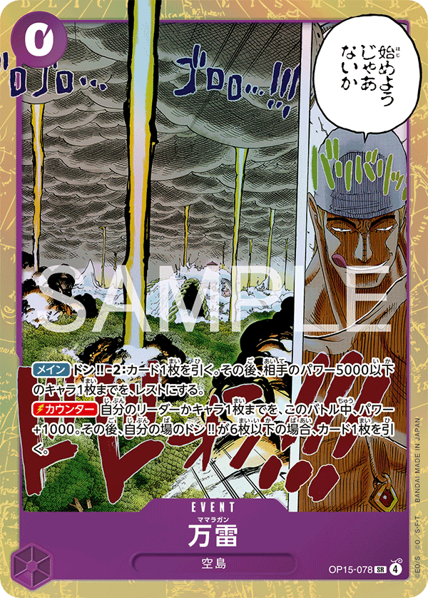
×4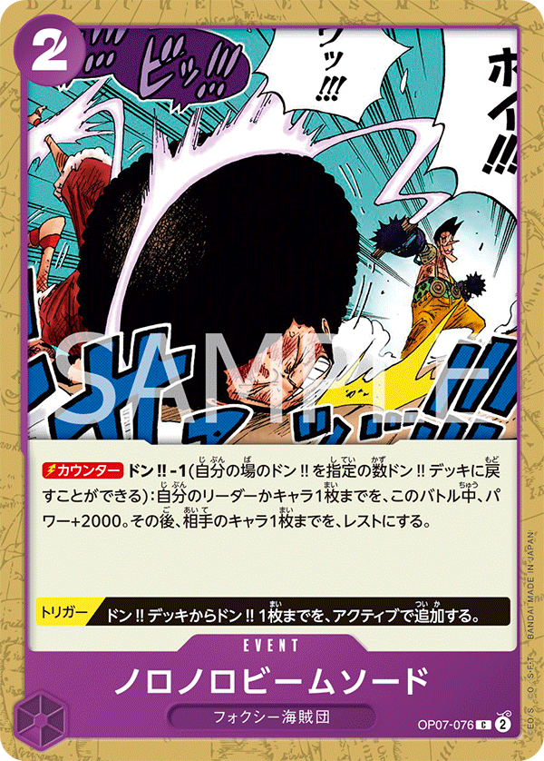
×2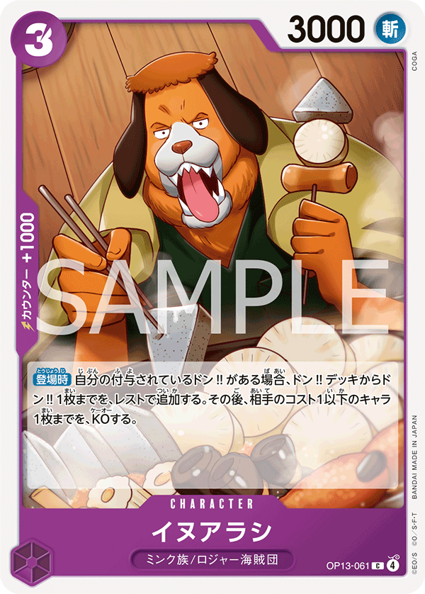
×2×1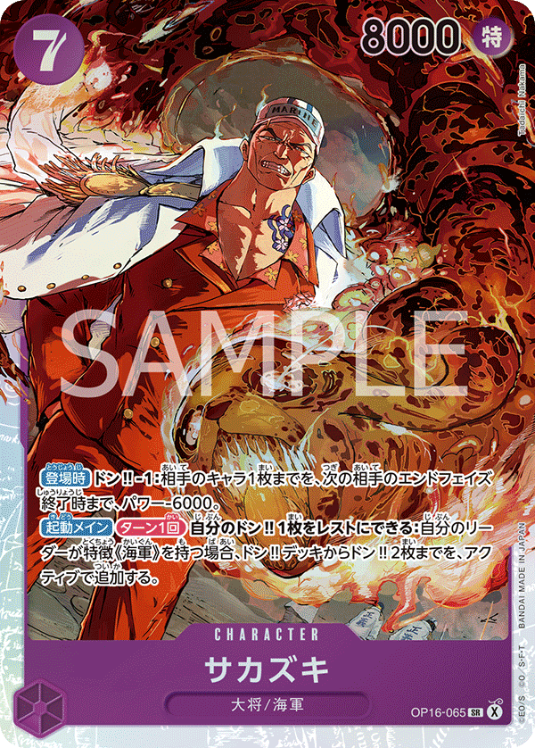
×4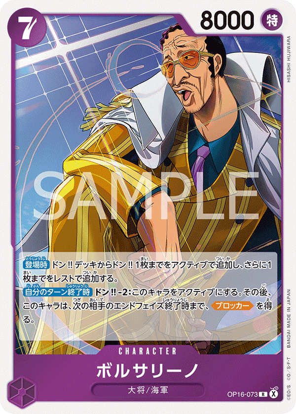
×4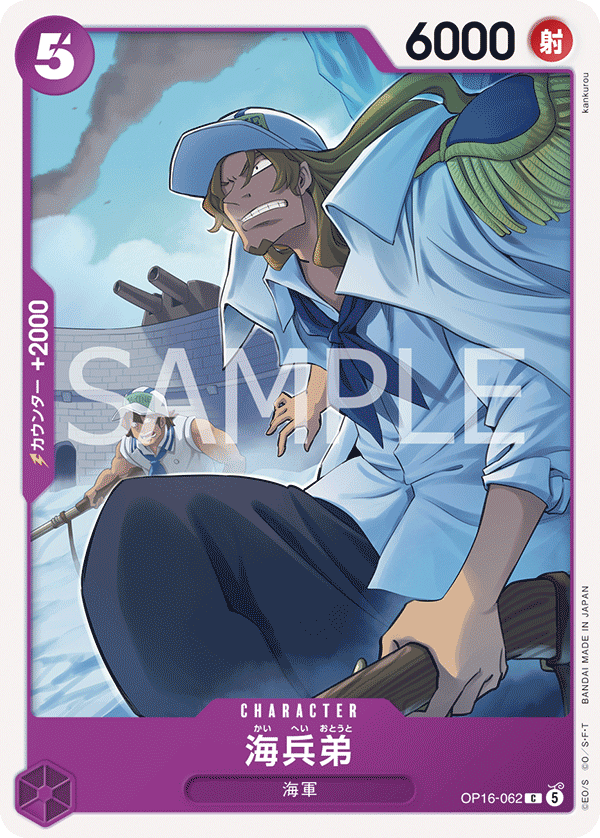
×2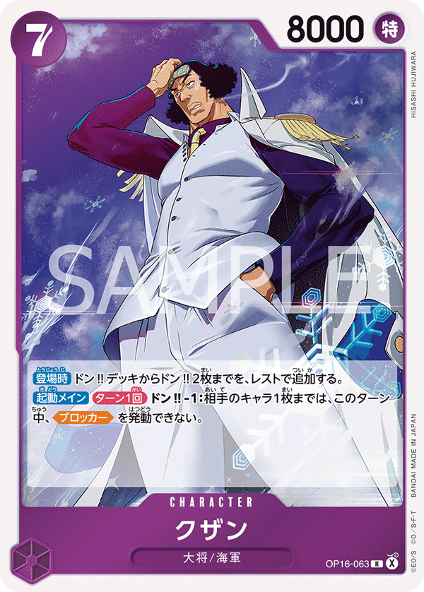
×4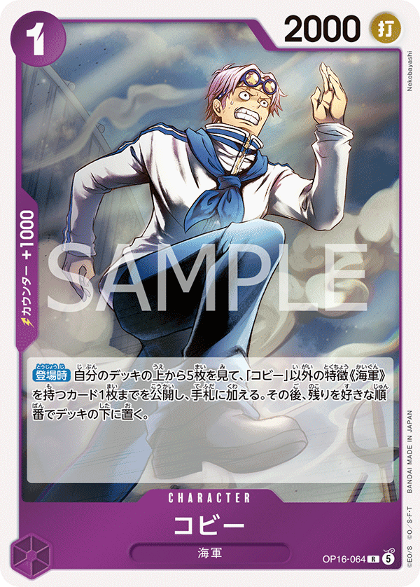
×4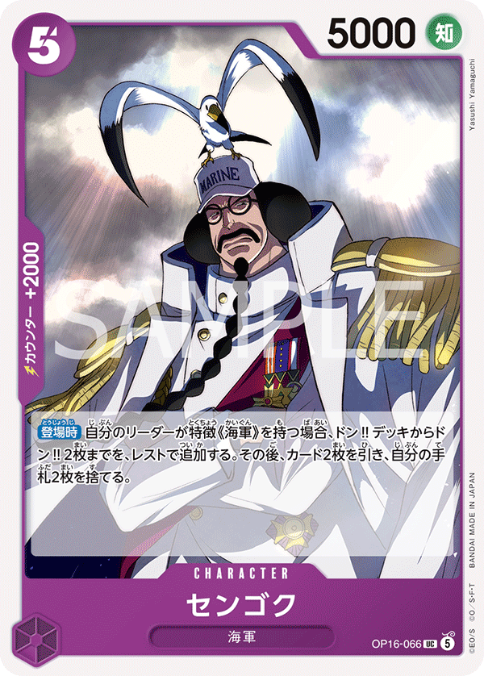
×4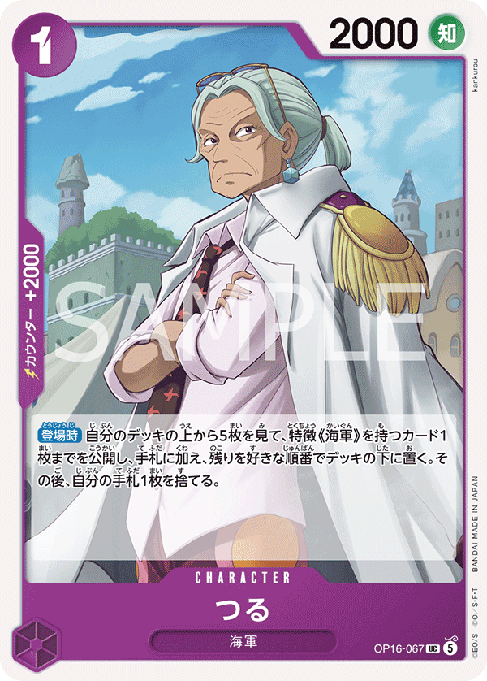
×4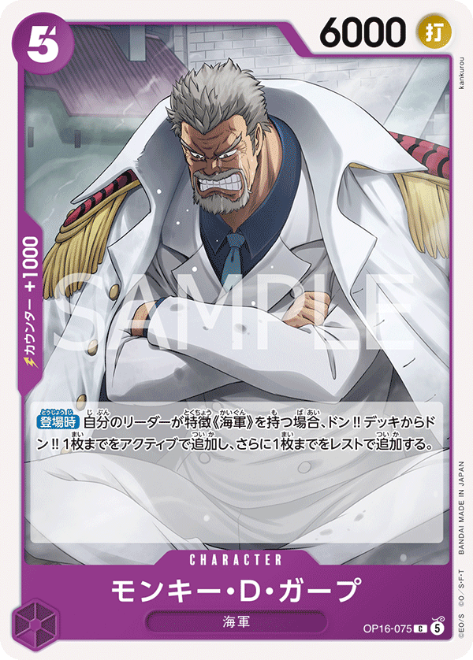
×4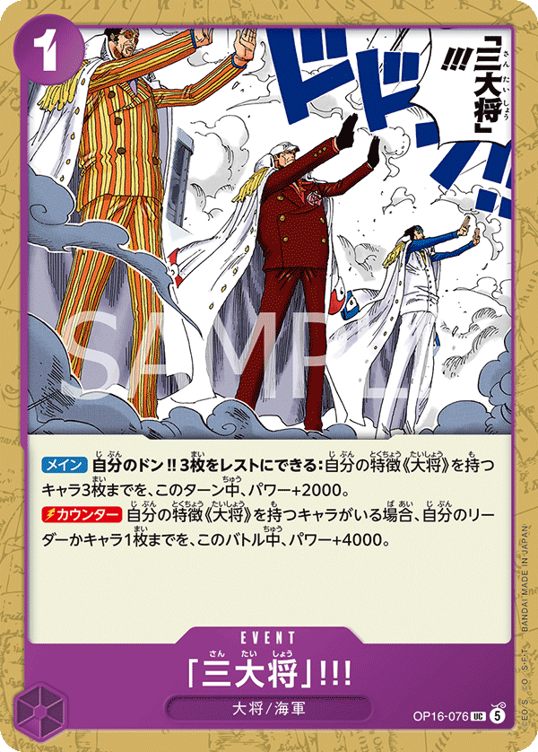
×4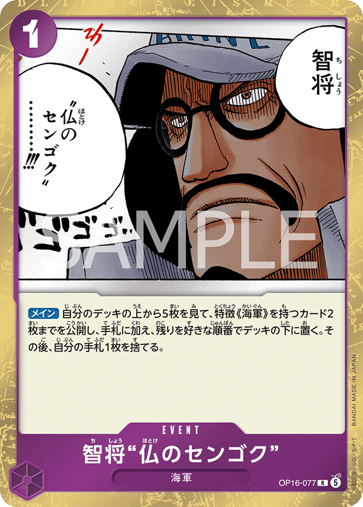
×4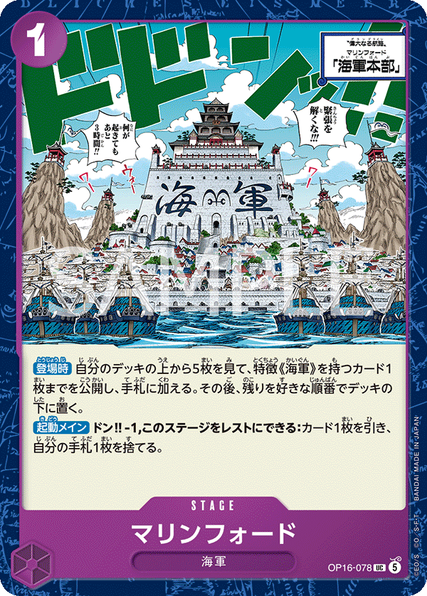
×4
| Turn | Phase | Expected opp | My response | Cards |
|---|---|---|---|---|
| T1 | my_turn | Shanks plays OP09-002 Uta (1c, 2000). No attack T1. | Develop OP16-063 or OP16-064. | OP16-063 OP16-064 |
| T2 | opp_turn | Shanks leader 5000 swings (HITS Sengoku 5000 via tie). 1 attack T2. | Take 1 life — Sengoku drops to 4 life. Save counter. | |
| T3 | my_turn | Shanks deploys OP09-011 Hongo (3c, 3000) or sets up OP12-008. | Deploy OP16-066 or OP16-067. Swing Sengoku 5000 + 1 DON = 6000 into Shanks 5000 leader for clean hit — Shanks drops to 4. | OP16-066 OP16-067 |
| T4 | opp_turn | OP12-008 Shanks (4c, 6000) or OP09-013 Yasopp SP (5c, 6000) deploys. Multi-attack (median 2). 6000 HITS Sengoku 5000 leader clearly. | Counter 6000 swings: Sengoku 5000 + 2000 counter = 7000 > 6000 = fail. Two 6000 swings means you need 2 counter cards. | OP13-061 OP16-075 |
| T5 | my_turn | Shanks pushes board with OP12-008 + OP09-013 stacked. | Play OP16-065 Sakazuki (7c, 8000). Swing 8000 into OP09-013 Yasopp SP (6000) for KO. Don't activate leader effect yet — need 8 DON saved. | OP16-065 |
| T6 | my_turn | OP09-009 Benn.Beckman SP (7c, 7000) lands and pushes. | Activate leader effect — return 8 DON, deploy 3 Admirals. This is your only realistic counter to Shanks's mid-game stack. Sakazuki (if not on board) + Borsalino (8000) + third Admiral. | OP16-065 OP16-073 |
| T7 | opp_turn | OP06-007 Shanks SP (10c, 12000) or OP09-004 Shanks (10c, 12000) closes. 12000 swing HITS clearly. | Counter math is hopeless — Sengoku 5000 + 2000 counter = 7000 vs 12000 needs +6000 more counter. Take the hit, swing back with Admiral board next turn. | OP13-061 OP16-075 |
| Turn | Phase | Expected opp | My response | Cards |
|---|---|---|---|---|
| T1 | opp_turn | Shanks plays OP09-002 Uta (1c). No attack T1. | Pass. | |
| T2 | my_turn | Shanks leader 5000 swings (HITS via tie). | Deploy OP16-063 or OP16-064. Swing Sengoku 5000 into Shanks 5000 leader for trade hit. | OP16-063 OP16-064 |
| T3 | opp_turn | OP09-011 Hongo (3c, 3000) or OP12-008 Shanks (4c, 6000) deploys. | Counter 6000 swings: Sengoku 5000 + 2000 counter = 7000 > 6000 = fail. | OP13-061 OP16-075 |
| T4 | my_turn | Multi-attack (median 2). OP12-008 (6000) + leader stacks. | Deploy OP16-066 or OP16-067. Swing Sengoku 5000 + 2 DON = 7000 into Shanks 5000 leader for clean hit. | OP16-066 OP16-067 |
| T5 | my_turn | OP09-013 Yasopp SP (5c, 6000) lands. | Play OP16-073 Borsalino (7c, 8000). Swing 8000 into OP12-008 Shanks (6000) for KO. | OP16-073 |
| T6 | my_turn | OP09-009 Benn.Beckman SP (7c, 7000) lands. | Activate leader effect — return 8 DON, dump 3 Admirals. Force Shanks to spend counter on every Admiral attack. | OP16-065 OP16-073 |
| T7 | opp_turn | OP06-007 Shanks SP (10c, 12000) closes. | Counter math: Sengoku 5000 + 2000 counter = 7000 vs 12000 = far short. Take the hit; race back with Admiral board. | OP13-061 OP16-075 |

| Turn | Phase | Expected opp | My response | Cards |
|---|---|---|---|---|
| T1 | my_turn | Rosinante plays OP12-108 Donquixote Rosinante (1c, 2000) or similar 1-cost. No attack T1. | Develop OP16-063 or OP16-064. | OP16-063 OP16-064 |
| T2 | opp_turn | Rosinante leader 5000 swings (HITS Sengoku 5000 via tie). 1 attack T2. | Take 1 life. Sengoku drops to 4 — save counter for 6000+ swings. | |
| T3 | my_turn | P-088 Trafalgar Law (4c, 5000, 2000 counter) or ST10-010 Law (4c, 5000) deploys. | Deploy OP16-066 or OP16-067. Swing Sengoku 5000 + 1 DON = 6000 into Rosinante 5000 leader for clean hit — Rosinante drops to 3. | OP16-066 OP16-067 |
| T4 | opp_turn | OP10-072 Donquixote Rosinante (5c, 6000) lands and swings 6000. Multi-attack (median 1-2). | Counter OP10-072 6000: Sengoku 5000 + 2000 counter = 7000 > 6000 = fail. | OP13-061 OP16-075 |
| T5 | my_turn | EB04-038 Rosinante & Law (6c, 8000) lands. | Play OP16-065 Sakazuki (7c, 8000). Swing Sakazuki 8000 into OP10-072 (6000) for KO — clears the mid-game threat. | OP16-065 |
| T6 | my_turn | Rosinante stacks Rosinante & Law 8000 + leader push. | Activate leader effect — dump 8 DON, deploy 3 Admirals. Multi-body push hits Rosinante at 3 life hard. | OP16-065 OP16-073 |
| T7 | opp_turn | Rosinante & Law 8000 swings + leader. 8000 HITS Sengoku 5000 leader clearly. | Counter the 8000: Sengoku 5000 + 2000 counter + 2000 counter = 9000 > 8000 = fail. Two counter cards needed. The 6000 leader swing: Sengoku 5000 + 2000 = 7000 > 6000 = fail. | OP13-061 OP16-075 |
| Turn | Phase | Expected opp | My response | Cards |
|---|---|---|---|---|
| T1 | opp_turn | Rosinante plays OP12-108 (1c). No attack T1. | Pass. | |
| T2 | my_turn | Rosinante leader 5000 swings (HITS via tie). | Deploy OP16-063 or OP16-064. Swing Sengoku 5000 into Rosinante 5000 for trade — Rosinante drops to 3. | OP16-063 OP16-064 |
| T3 | opp_turn | P-088 Law (4c, 5000) deploys + leader swings. | Counter 5000-6000 swings as appropriate. 5000 leader swing: Sengoku 5000 + 1000 counter = 6000 vs 5000 = fails. | OP13-061 OP16-075 |
| T4 | my_turn | OP10-072 Donquixote Rosinante (5c, 6000) lands. | Deploy OP16-066 or OP16-067. Swing Sengoku 5000 + 2 DON = 7000 into Rosinante 5000 leader for clean hit. | OP16-066 OP16-067 |
| T5 | my_turn | EB04-038 Rosinante & Law (6c, 8000) lands. | Play OP16-073 Borsalino (7c, 8000). Swing 8000 into OP10-072 (6000) for KO. | OP16-073 |
| T6 | my_turn | Rosinante pushes board with Rosinante & Law 8000 + leader. | Activate leader effect — 3 Admirals dump. Press Rosinante's 2 remaining life. | OP16-065 OP16-073 |
| T7 | opp_turn | Rosinante & Law (8000) + OP10-072 (6000) + leader stack. | Counter 8000: Sengoku 5000 + 2000 + 2000 = 9000 > 8000 = fail. Counter the 6000s: Sengoku 5000 + 2000 = 7000 > 6000 = fail. | OP13-061 OP16-075 |

| Turn | Phase | Expected opp | My response | Cards |
|---|---|---|---|---|
| T1 | my_turn | Enel plays OP15-061 Ohm (1c, 2000) or OP15-067 Shura (1c, 2000). No attack T1. | Develop OP16-063 or OP16-064. | OP16-063 OP16-064 |
| T2 | opp_turn | Enel leader 5000 swings (HITS Sengoku 5000 via tie). 1 attack T2. | Take 1 life. Sengoku drops to 4 — save counter. | |
| T3 | my_turn | Enel deploys a 3-4 cost body (Inuarashi splash or Ohm refill). | Deploy OP16-066 or OP16-067. Swing Sengoku 5000 + 1 DON = 6000 into Enel 5000 leader for clean hit — Enel drops to 4. | OP16-066 OP16-067 |
| T4 | opp_turn | OP15-114 Wyper (5c, 6000) lands and may swing. Multi-attack (median 1-2). 6000 HITS Sengoku 5000 leader. | Counter Wyper 6000: Sengoku 5000 + 2000 counter = 7000 > 6000 = fail. | OP13-061 OP16-075 |
| T5 | my_turn | OP15-118 Enel character (6c, 8000) lands — effect-immune to non-combat removal. | Play OP16-065 Sakazuki (7c, 8000). Hold this turn — don't swing into OP15-118 yet because attacker wins on tie meaning Sakazuki 8000 vs OP15-118 8000 KOs the target but Sakazuki also stays on board (defender is KO'd, attacker survives). Swing Sakazuki 8000 into Enel 5000 leader instead for life damage — Enel drops to 3. | OP16-065 |
| T6 | my_turn | OP15-118 Enel character on board swinging 8000. Enel uses leader effect for draws. | Activate Sengoku leader effect — return 8 DON, deploy 3 Admirals. Sakazuki (if not on board) + Borsalino (8000) + third Admiral. Swing Borsalino 8000 into OP15-118 (8000) — TIE attacker wins, OP15-118 KO'd via combat (only legal removal per decompiled rules). | OP16-065 OP16-073 |
| T7 | opp_turn | Enel pushes lethal with OP15-114 Wyper (6000) + leader + possibly a second OP15-118. | Counter 6000 swings: Sengoku 5000 + 2000 counter = 7000 > 6000 = fail. Counter 8000 swing: Sengoku 5000 + 2000 + 2000 = 9000 > 8000 = fail. | OP13-061 OP16-075 |
| Turn | Phase | Expected opp | My response | Cards |
|---|---|---|---|---|
| T1 | opp_turn | Enel plays OP15-061 Ohm or OP15-067 Shura (1c). No attack T1. | Pass. | |
| T2 | my_turn | Enel leader 5000 swings (HITS via tie). | Deploy OP16-063 or OP16-064. Swing Sengoku 5000 into Enel 5000 leader for trade hit. | OP16-063 OP16-064 |
| T3 | opp_turn | Enel deploys 3-4 cost body + leader swings (5000-6000). | Counter 6000 leader swing: Sengoku 5000 + 2000 counter = 7000 > 6000 = fail. | OP13-061 OP16-075 |
| T4 | my_turn | OP15-114 Wyper (5c, 6000) lands. | Deploy OP16-066 or OP16-067. Swing Sengoku 5000 + 2 DON = 7000 into Enel 5000 leader for clean hit. | OP16-066 OP16-067 |
| T5 | my_turn | OP15-118 Enel character (6c, 8000) lands. | Play OP16-065 Sakazuki (7c, 8000). Swing Sakazuki 8000 into OP15-118 8000 — TIE attacker wins, OP15-118 KO'd via combat (only legal path per rules_truth.md §1). | OP16-065 |
| T6 | my_turn | Enel pushes board with second OP15-118 or Wyper stack. | Activate leader effect — 3 Admirals dump. Borsalino 8000 KOs any second OP15-118 via combat. | OP16-065 OP16-073 |
| T7 | opp_turn | Enel lethal push with Wyper + OP15-118 + leader. | Counter 6000 Wyper and 5000-6000 leader: Sengoku 5000 + 2000 = 7000 > 6000 = fail. Counter 8000 OP15-118: Sengoku 5000 + 2000 + 2000 = 9000 > 8000 = fail. | OP13-061 OP16-075 |

| Turn | Phase | Expected opp | My response | Cards |
|---|---|---|---|---|
| T1 | my_turn | Luffy plays a 1-cost setup. No attack T1. | Develop OP16-063 or OP16-064. | OP16-063 OP16-064 |
| T2 | opp_turn | Luffy leader 5000 swings (HITS Sengoku 5000 via tie). 1 attack T2. | Take 1 life — Sengoku drops to 4. Don't waste counter on 5000 swings. | |
| T3 | my_turn | Luffy deploys a 4-cost Green/Blue body. | Deploy OP16-066 or OP16-067. Swing Sengoku 5000 + 1 DON = 6000 into Luffy 5000 leader for clean hit — Luffy drops to 3. | OP16-066 OP16-067 |
| T4 | opp_turn | Multi-attack (median 2). Luffy bounce/rest tool on your board body. | Counter 6000 swings: Sengoku 5000 + 2000 counter = 7000 > 6000 = fail. Accept that 1 body gets bounced/rested. | OP13-061 OP16-075 |
| T5 | my_turn | Luffy pushes board with stacked attackers + bounce. | Play OP16-065 Sakazuki (7c, 8000). Swing 8000 into Luffy 5000 leader — Luffy 5000 + 2000 counter (if he has it) = 7000 < 8000 = HIT. Luffy at 2 life. | OP16-065 |
| T6 | my_turn | Luffy pushes lethal with multi-body attack. | Activate leader effect — dump 8 DON, deploy 3 Admirals (Sakazuki if not on board + Borsalino 8000 + third). Force Luffy to spend bounce/rest on multiple bodies. | OP16-065 OP16-073 |
| T7 | opp_turn | Luffy multi-attack with bounce-buffed swings. | Counter the 6000s: Sengoku 5000 + 2000 counter = 7000 > 6000 = fail. Save 1 counter card per swing. | OP13-061 OP16-075 |
| Turn | Phase | Expected opp | My response | Cards |
|---|---|---|---|---|
| T1 | opp_turn | Luffy plays 1-cost setup. No attack T1. | Pass. | |
| T2 | my_turn | Luffy leader 5000 swings (HITS via tie). | Deploy OP16-063 or OP16-064. Swing Sengoku 5000 into Luffy 5000 leader for trade. | OP16-063 OP16-064 |
| T3 | opp_turn | Luffy 4-cost body. 5000-6000 swing pressure. | Counter 6000: Sengoku 5000 + 2000 counter = 7000 > 6000 = fail. | OP13-061 OP16-075 |
| T4 | my_turn | Multi-attack (median 2). Bounce-tool pressure. | Deploy OP16-066 or OP16-067. Swing Sengoku 5000 + 2 DON = 7000 into Luffy 5000 leader for clean hit. | OP16-066 OP16-067 |
| T5 | my_turn | Luffy stacks bounce/rest disruption. | Play OP16-073 Borsalino (7c, 8000). Swing 8000 into Luffy 5000 leader for the close push. | OP16-073 |
| T6 | my_turn | Luffy pushes lethal with multi-body attack. | Activate leader effect — 3 Admirals on board. Force Luffy to overcommit bounce/rest. | OP16-065 OP16-073 |
| T7 | opp_turn | Luffy multi-attack lethal push. | Counter 6000s: Sengoku 5000 + 2000 counter = 7000 > 6000 = fail. | OP13-061 OP16-075 |

| Turn | Phase | Expected opp | My response | Cards |
|---|---|---|---|---|
| T1 | my_turn | Yamato plays a 1-cost setup body. No attack T1. | Develop OP16-063 or OP16-064. | OP16-063 OP16-064 |
| T2 | opp_turn | Yamato leader 5000 swings (HITS Sengoku 5000 via tie). 1 attack T2. | Take 1 life. Don't burn counter on 5000 swings. | |
| T3 | my_turn | OP16-082 Kin'emon (4c, 6000) deploys or is set up. Yamato may +1 DON swing leader at 6000. | Deploy OP16-066 or OP16-067. Swing Sengoku 5000 + 1 DON = 6000 into Yamato 5000 leader for clean hit — Yamato drops to 4 life. | OP16-066 OP16-067 |
| T4 | opp_turn | Kin'emon 6000 swings at Sengoku leader. Multi-attack (median 1-2). | Counter Kin'emon: Sengoku 5000 + 2000 counter = 7000 > 6000 = fail. Eat the leader 5000. | OP13-061 OP16-075 |
| T5 | my_turn | OP16-098 Yamato character (6c, 5000) lands. | Play OP16-065 Sakazuki (7c, 8000). Swing 8000 into Kin'emon (6000) for KO — 8000 > 6000 clears the board threat. | OP16-065 |
| T6 | my_turn | Yamato deploys OP16-085 Kouzuki Momonosuke (9c, 6000) or stacks attackers. | Activate leader effect — return 8 active DON, play Sakazuki (if not on board) + Borsalino (8000) + a third Admiral. Three-body push hits Yamato hard. | OP16-065 OP16-073 |
| T7 | opp_turn | Yamato pushes lethal with OP16-085 (6000) + OP16-082 (6000) + leader. | Counter the 6000s: Sengoku 5000 + 2000 counter = 7000 > 6000 = fail. Save 1 counter card for the second 6000 swing. | OP13-061 OP16-075 |
| Turn | Phase | Expected opp | My response | Cards |
|---|---|---|---|---|
| T1 | opp_turn | Yamato plays 1-cost setup. No attack T1. | Pass. | |
| T2 | my_turn | Yamato leader 5000 swings (HITS via tie). | Deploy OP16-063 or OP16-064. Swing Sengoku 5000 into Yamato 5000 leader for trade — Yamato drops to 4. | OP16-063 OP16-064 |
| T3 | opp_turn | OP16-082 Kin'emon (4c, 6000) deploys and may swing. | Counter Kin'emon 6000: Sengoku 5000 + 2000 counter = 7000 > 6000 = fail. | OP13-061 OP16-075 |
| T4 | my_turn | Multi-attack (median 2). Kin'emon + leader swings. | Deploy OP16-066 or OP16-067 support body. Swing Sengoku 5000 + 2 DON = 7000 into Yamato 5000 leader for clean hit. | OP16-066 OP16-067 |
| T5 | my_turn | OP16-098 Yamato character (6c, 5000) lands. | Play OP16-073 Borsalino (7c, 8000). Swing 8000 into Kin'emon (6000) for KO. Press life on Yamato. | OP16-073 |
| T6 | my_turn | OP16-085 Kouzuki Momonosuke (9c, 6000) sets up the close. | Activate leader effect — return 8 DON, deploy 3 different Admirals. Three-body Admiral push. | OP16-065 OP16-073 |
| T7 | opp_turn | Yamato lethal push with OP16-085 + Kin'emon + leader. | Counter the 6000s: Sengoku 5000 + 2000 counter = 7000 > 6000 = fail. | OP13-061 OP16-075 |

| Turn | Phase | Expected opp | My response | Cards |
|---|---|---|---|---|
| T1 | my_turn | Teach plays OP09-095 Laffitte (1c, 1000) for cheap Trigger value. No attack T1. | Develop OP16-063 or OP16-064 — cheap mono-purple setup body. Set up the DON ramp to enable the T6+ Admiral drop. | OP16-063 OP16-064 |
| T2 | opp_turn | Teach leader 5000 swings — HITS Sengoku 5000 via tie. 1 attack T2. | Take 1 life — Sengoku has 5 life, dropping to 4 is fine. Save counter for 6000+ swings. | |
| T3 | my_turn | Teach deploys OP16-108 or OP09-099 Fullalead and may swing leader at 5000. | Deploy OP16-066 or OP16-067 (support body). Swing Sengoku 5000 + 1 DON = 6000 into Teach 5000 leader for clean hit — Teach drops to 3 life. | OP16-066 OP16-067 |
| T4 | opp_turn | EB04-058 Borsalino (5c, 6000) or OP15-114 Wyper (5c, 6000) lands. Multi-attack (median 1-2). 6000 swing HITS Sengoku 5000 leader clearly. | Counter 6000: Sengoku 5000 + 2000 counter (Inuarashi OP13-061 has 1000 counter, OP16-075 family run 2000 counter slots) = 7000 > 6000 = fail. Don't waste counter on 5000 leader swings. | OP13-061 OP16-075 |
| T5 | my_turn | Teach develops a second 5-6 cost body and pushes board. | Play OP16-065 Sakazuki (7c, 8000) on its own (don't burn the leader effect yet). Swing Sakazuki 8000 into Teach leader 5000 — Teach 5000 + 2000 counter = 7000 < 8000 = HIT. Teach must Trigger-redirect or eat the hit. | OP16-065 |
| T6 | my_turn | OP09-093 Marshall.D.Teach (10c, 12000) lands or is one turn away. | Activate the leader effect — return 8 active DON to the DON deck and play up to 3 {Admiral} characters: Sakazuki (7c, 8000) + Borsalino (7c, 8000) + a third Admiral support. This is the swing turn: 3 bodies arrive at once, forcing Teach to burn every Trigger-redirect he has. | OP16-065 OP16-073 |
| T7 | opp_turn | Teach swings OP09-093 (12000) at Sengoku leader. 12000 swing HITS clearly. | Counter the 12000: Sengoku 5000 + 1 DON + multiple counter cards needed. Realistically take the hit — Sengoku at 2 life is still alive. Save counter for the follow-up 6000-8000 swings and swing back next turn with the Admiral board. | OP13-061 OP16-075 |
| Turn | Phase | Expected opp | My response | Cards |
|---|---|---|---|---|
| T1 | opp_turn | Teach plays OP09-095 Laffitte (1c). No attack T1. | Pass — you have 2 DON on T2. | |
| T2 | my_turn | Teach leader 5000 swing incoming this turn or next (HITS via tie). | Deploy OP16-063 or OP16-064. Swing Sengoku 5000 into Teach 5000 leader for trade hit — Teach drops to 3. | OP16-063 OP16-064 |
| T3 | opp_turn | Teach deploys OP16-108 and may swing leader at 5000 or +1 DON to 6000. | Counter 6000 swing: Sengoku 5000 + 2000 counter = 7000 > 6000 = fail. Eat 5000 swings. | OP13-061 OP16-075 |
| T4 | my_turn | EB04-058 Borsalino (5c, 6000) lands. | Deploy OP16-066 or OP16-067. Swing Sengoku 5000 + 2 DON = 7000 leader into Teach 5000 leader for clean hit. | OP16-066 OP16-067 |
| T5 | my_turn | Teach builds toward OP09-093 deployment T6. | Play OP16-073 Borsalino (7c, 8000). Swing 8000 into Teach 5000 leader — Teach 5000 + 2000 counter = 7000 < 8000 = HIT. Force Trigger-redirect or eat life damage. | OP16-073 |
| T6 | my_turn | OP09-093 Marshall.D.Teach (10c, 12000) lands. | Activate leader effect — dump 8 DON, play Sakazuki (8000) + 2 more Admirals from hand. Triple-body push forces Teach to spend Trigger-redirect cards he can't refill. | OP16-065 OP16-073 |
| T7 | opp_turn | Teach pushes lethal with OP09-093 (12000) + Wyper/Borsalino (6000) + leader. | Counter the 6000s: Sengoku 5000 + 2000 counter = 7000 > 6000 = fail. Take the 12000 hit on leader — Sengoku still has 2-3 life, swing back next turn for the kill. | OP13-061 OP16-075 |